| Região | Capítulos | Capítulos ativos | Participantes |
|---|---|---|---|
| EUA e Canadá | 69 | 16 | 35818 |
| América Latina | 67 | 17 | 33259 |
| Europa | 65 | 10 | 28685 |
| Ásia | 21 | 2 | 8231 |
| África | 18 | 2 | 12182 |
| Oceania | 11 | 2 | 5976 |
Projetos de tradução com a comunidade R
aMostra de Estatística - IME USP
R-Ladies São Paulo + Beatriz Milz + Geovana Lopes Batista
01 de outubro de 2026
Cronograma
R-Ladies São Paulo
Projetos de tradução com a comunidade R
Beatriz Milz
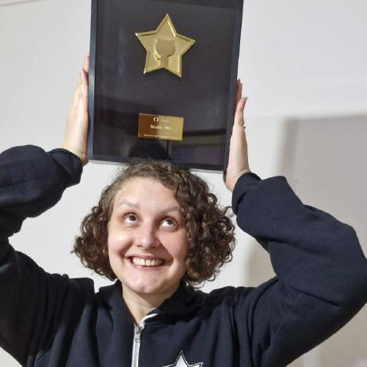
Doutorado em Ciência Ambiental (IEE/USP), estágio pós-doutoral na UFABC (bolsista FAPESP).
Co-organizadora da R-Ladies São Paulo desde 2018.
Editora de revisão de software na rOpenSci desde 2024.
Mãe do Eduardo.
Site: beamilz.com
Geovana Lopes Batista
Cientista de dados no Banco BMG.
Formada em Matemática pela USP e graduanda em Estatística no IME-USP.
Pós-graduação em Ciência de Dados pelo IFSP.
Co-organizadora da R-Ladies São Paulo.
R-Ladies SP
O que é a RLadies+?
RLadies+ é uma organização mundial cuja missão é promover a diversidade de gênero na comunidade da linguagem R.
R-Ladies São Paulo integra, orgulhosamente, a organização RLadies+ Global, em São Paulo.
Como?
Através de meetups e mentorias em um ambiente seguro e amigável.
Nosso principal objetivo é promover a linguagem computacional estatística R compartilhando conhecimento, assim, quem tiver interesse na linguagem será bem-vinda, independente do nível de conhecimento.
Para quem?
Nosso principal público-alvo são as pessoas que se identificam com gêneros sub-representados na comunidade R, portanto: mulheres cis e trans, homens trans, pessoas não-binárias, genderqueer e agênero.
Missão
Como uma iniciativa de diversidade, a missão da RLadies+ é alcançar uma representação proporcional de pessoas de gêneros atualmente sub-representados na comunidade R, incentivando, inspirando e capacitando-as.
Código de conduta
A RLadies+ dedica-se a proporcionar uma experiência livre de assédio para todas as pessoas participantes, desta forma, não é tolerada nenhuma forma de assédio. Código de conduta - R-Ladies
RLadies+: capítulos no mundo
Atualizado em: 30/09/2026. Ativo: evento no Meetup nos últimos 12 meses, incluindo agendados e cancelados. Fonte: RLadies+ Meetup Archive
RLadies+ no Brasil: capítulos ativos
| Capítulo | Participantes | Último evento realizado |
|---|---|---|
| Goiânia | 632 | 09/2026 |
| Niterói | 1476 | 09/2026 |
| São Paulo | 1558 | 03/2026 |
| Porto Alegre | 343 | 08/2025 |
Atualizado em: 30/09/2026. Ativo: evento no Meetup nos últimos 12 meses, incluindo agendados e cancelados. Fonte: RLadies+ Meetup Archive
RLadies+ no Brasil: outros capítulos
| Capítulo | Participantes | Último evento realizado |
|---|---|---|
| Floripa | 527 | 05/2025 |
| Vitória | 266 | 05/2025 |
| Lavras | 131 | 10/2024 |
| Natal | 311 | 10/2024 |
| Belo Horizonte | 807 | 03/2024 |
| Salvador | 329 | 10/2023 |
| Ribeirão Preto | 472 | 10/2023 |
| Capítulo | Participantes | Último evento realizado |
|---|---|---|
| Brasília | 116 | 12/2021 |
| Rio de Janeiro | 468 | 11/2021 |
| Fortaleza | 85 | 12/2020 |
| Curitiba | 99 | 12/2020 |
| Recife | 114 | 09/2019 |
| São Mateus | 57 | Nenhum evento |
Atualizado em: 30/09/2026. Ativo: evento no Meetup nos últimos 12 meses, incluindo agendados e cancelados. Fonte: RLadies+ Meetup Archive
R-Ladies em São Paulo

Primeiro encontro da R-Ladies São Paulo - 2018
+ 1558 pessoas participantes - 09/2026
GuGuDaDados
Primeira edição em novembro/2022.

Blog: rladies-sp.org
- Textos escritos por pessoas da comunidade

Projetos de tradução com a comunidade R
Por que traduzir?
Muitos recursos para aprender R estão disponíveis apenas em inglês.
Traduzir amplia o acesso a conteúdos técnicos e democratiza o conhecimento.
Mesmo com ferramentas de IA, traduções feitas e revisadas pela comunidade continuam importantes.
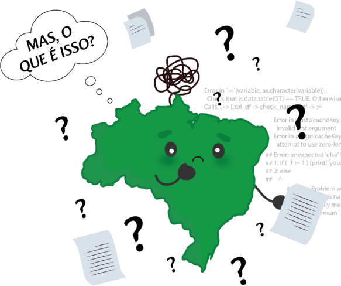
Ilustração: Ariana Cabral
Vamos falar de 4 projetos
| Projeto | Comunidades envolvidas |
|---|---|
| Pacote dados | LatinR, RLadies+ |
| Livro R para Ciência de Dados | R-Ladies São Paulo, LatinR, Curso-R |
| DevGuide da rOpenSci | rOpenSci, LatinR |
| Tradução das mensagens do R | R Contribution Working Group (inclui a RLadies+), LatinR |
Pacote dados
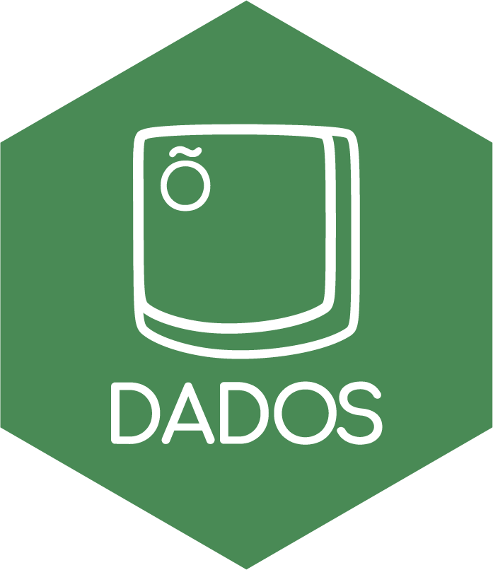
Pacote dados (2020)
Tradução das bases de dados usadas no livro R for Data Science.
Inspirado no pacote
{datos}, em espanhol.Coordenação: Riva Quiroga e Beatriz Milz (R-Ladies SP).
11 pessoas voluntárias de 3 países (Brasil, Chile e Colômbia).
Disponível no CRAN.
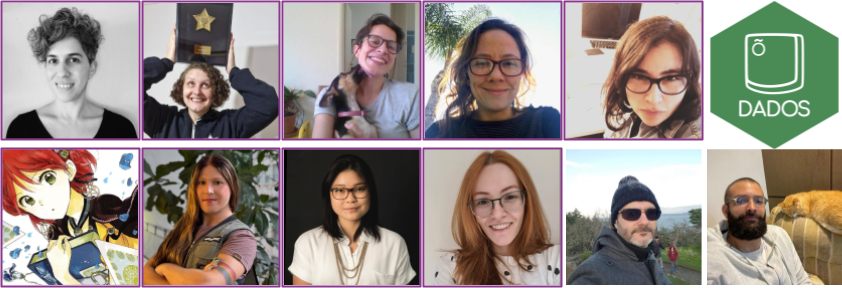
Site do pacote dados
Pacote dados: exemplo
# A tibble: 87 × 14
nome altura massa cor_do_cabelo cor_da_pele cor_dos_olhos
<chr> <int> <dbl> <chr> <chr> <chr>
1 Luke Skywalker 172 77 Loiro Branca clara Azul
2 C-3PO 167 75 <NA> Ouro Amarelo
3 R2-D2 96 32 <NA> Branca, Azul Vermelho
4 Darth Vader 202 136 Nenhum Branca Amarelo
5 Leia Organa 150 49 Castanho Clara Castanho
# ℹ 82 more rows
# ℹ 8 more variables: ano_nascimento <dbl>, sexo_biologico <chr>,
# genero <chr>, planeta_natal <chr>, especie <chr>, filmes <list>,
# veiculos <list>, naves_espaciais <list>Livro R para Ciência de Dados

O livro R for Data Science
Livro para aprender ciência de dados com R e o tidyverse: importar, arrumar, transformar, visualizar e modelar dados.
Autoria: Hadley Wickham, Mine Çetinkaya-Rundel e Garrett Grolemund.
Gratuito online (r4ds.hadley.nz) e à venda impresso (O’Reilly).
Quem escreveu o livro?
Hadley Wickham: cientista-chefe da Posit (antiga RStudio), lidera a equipe do tidyverse e criou pacotes como ggplot2 e dplyr.
Mine Çetinkaya-Rundel: professora do Departamento de Ciência Estatística da Duke University, trabalha com ensino de estatística e ciência de dados.
Garrett Grolemund: autor do livro Hands-On Programming with R e um dos autores do pacote lubridate.
Fontes: hadley.nz, mine-cr.com, Hands-On Programming with R
Livro R para Ciência de Dados
A 1ª edição em português estava disponível apenas impressa (R$ 120 a R$ 150).
2021: no Clube do livro da R-Ladies SP, vimos que a 2ª edição estava sendo escrita e pedimos permissão para traduzir.
Set/2023 a nov/2024: tradução da 2ª edição.
- Coordenação: Beatriz Milz. Orientação: Riva Quiroga.
Disponível gratuitamente em: pt.r4ds.hadley.nz
Site do livro em português
Livro R para Ciência de Dados: equipe
22 pessoas participaram: cada capítulo foi traduzido por uma pessoa e revisado por duas.
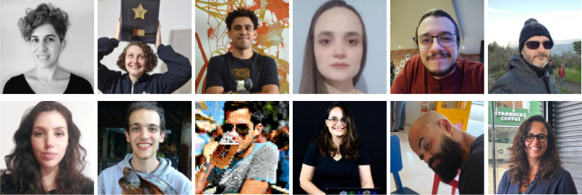
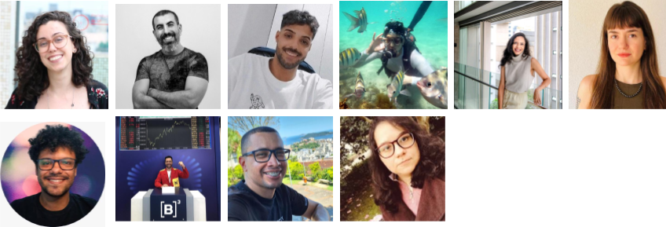
Livro R para Ciência de Dados: como fizemos
Comunidades como a RLadies+ ajudaram a encontrar pessoas voluntárias.
GitHub: issues, pull requests e projects para organizar o trabalho.
Guia de tradução: facilitou a participação de pessoas sem experiência prévia com GitHub.
Divulgação: Clube do livro R-Ladies SP, organizado por Luana Antunes e Beatriz Milz.
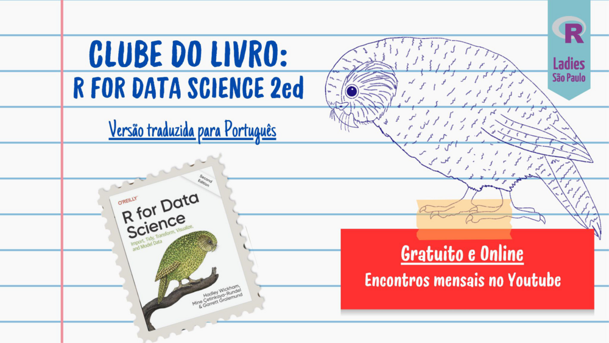
DevGuide da rOpenSci
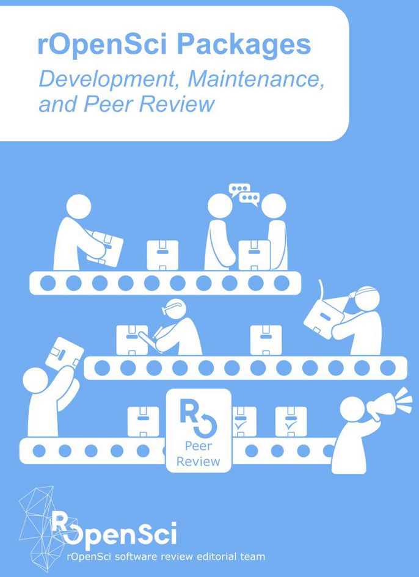
O que é a rOpenSci?
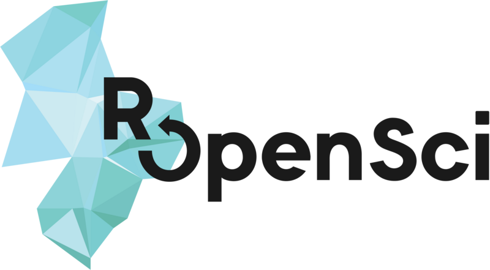
Organização sem fins lucrativos, fundada em 2011.
Promove pesquisa aberta e reprodutível, com dados compartilhados e software reutilizável.
Faz revisão por pares de pacotes R, com uma equipe de editoras e editores voluntários.
Busca construir uma comunidade acolhedora e diversa.
Fonte: About - rOpenSci
Pacotes da rOpenSci
Exemplo: pdftools
Outros pacotes da rOpenSci
targets: pipelines reprodutíveis, que reexecutam apenas o que mudou.
skimr: resumo rápido e legível de bases de dados.
magick: processamento de imagens no R.
Veja todos em: ropensci.org/packages
DevGuide da rOpenSci
Guia sobre desenvolvimento, manutenção e avaliação por pares de pacotes em R.
Tradução de jun/2023 a out/2025, com pessoas de Angola, Brasil e Portugal.
Coordenação: Yanina Bellini Saibene.
Participação: Francesca Belem Lopes Palmeira, Beatriz Milz, António Pedro, Ariana Moura Cabral, Daniel Vartanian, Ildeberto Vasconcelos, João Granja-Correia, Marcelo Perlin, Pedro Faria, Rafael Fontenelle e Samuel Carleial Fernandes.
2024: Community Call “A comunidade R fala português” e Traslatón na LatinR.
Fonte: Blog da rOpenSci
Site do DevGuide em português
Tradução das mensagens do R

Tradução das mensagens do R
Tradução das mensagens (erros, avisos, etc.) do R e dos pacotes do “R base”.
2022: R Traslatón na LatinR, em parceria com o R Contributors.
Projeto aberto para contribuições!
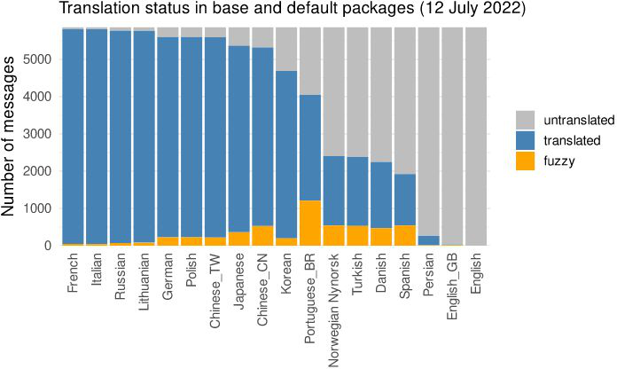
Fonte do gráfico: Blog do R
Quem está por trás?
R Contribution Working Group: colaboração entre o R Core, comunidades como RLadies+, Forwards e MiR, e a comunidade R em geral.
- Objetivo: incentivar novas pessoas a contribuir com o R, com foco em diversidade e inclusão.
Equipes voluntárias de tradução para cada idioma.
A organização das traduções fica na organização r-devel do GitHub: guias, glossário e painel de acompanhamento das traduções.
Mensagens do R: em inglês
Mensagens do R: em português
Mudando o idioma das mensagens:
O mesmo código, agora com as mensagens traduzidas:
Como traduzir as mensagens do R?
Entre no Zulip do R Project e procure os canais da seção Translation.
Crie uma conta no Weblate, a plataforma onde as traduções são feitas.
Escolha um componente em português que não esteja 100% traduzido.
- Dica: comece por pacotes como
paralleloumethods. Pacotes comostatstêm muitos termos técnicos.
- Dica: comece por pacotes como
Clique em Unfinished strings e comece a traduzir!
Weblate
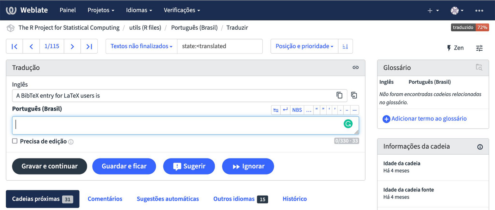
Mais informações: R Contributors - Translations
Próxima geração de contribuições ao R
Em 2025, o projeto Enabling the Next Generation of Contributors to R recebeu cerca de £500 mil do Research Software Maintenance Fund (Software Sustainability Institute, Reino Unido).
Objetivo: garantir a sustentabilidade do R Project.
A R6 Estatística e Treinamentos (Curso-R), consultoria brasileira, está trabalhando para melhorar a integração das traduções feitas no Weblate.
- Equipe da R6: Beatriz Milz e Fernando Corrêa.
- Mentoria das pessoas que administram o Weblate: Mike Chirico e Gergely Daróczi.
Faça parte!
Contribuições da RLadies+
O pedido para traduzir a 2ª edição do R4DS surgiu no Clube do livro da R-Ladies SP.
Comunidades como a RLadies+, a LatinR e a Curso-R foram essenciais para encontrar pessoas voluntárias.
O Clube do livro da R-Ladies SP ajuda a divulgar o livro traduzido.
A RLadies+ faz parte do R Contribution Working Group, que incentiva novas pessoas a contribuir com o R (inclusive com traduções).
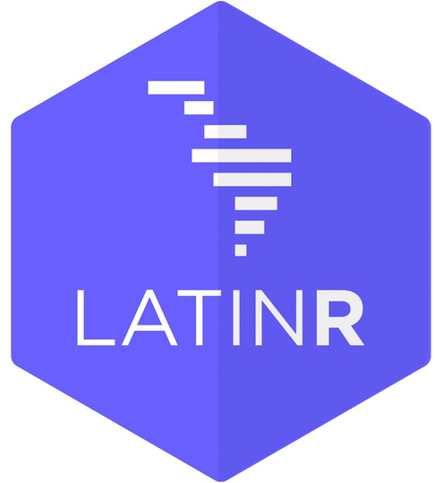
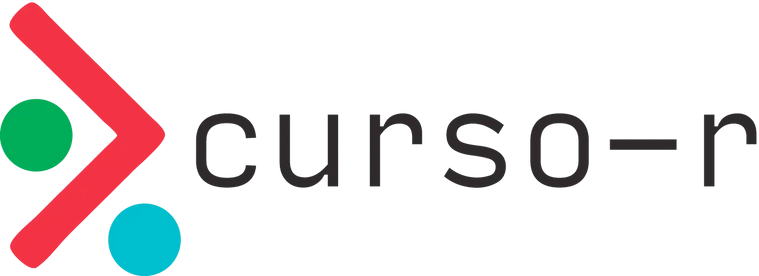
Por que participar?
Aprender na prática como funciona um pacote de R (e o próprio R por dentro).
Praticar Git e GitHub em um projeto real: issues, pull requests e revisão.
Construir portfólio e currículo.
Conhecer pessoas da comunidade R no Brasil e no mundo.
Abrir portas para oportunidades, como bolsas e participação em eventos.
Como contribuir?
Traduzir e revisar: por exemplo, as mensagens do R no Weblate.
Avisar sobre problemas encontrados (erros de tradução, links quebrados etc.), abrindo issues no GitHub: livro, pacote dados, DevGuide.
Usar e divulgar os materiais: estude pelo livro, use o pacote dados em aulas e compartilhe com colegas!
Organizar eventos: por exemplo, maratonas de tradução (como os Traslatóns da LatinR) ou clubes do livro (como o da R-Ladies SP).
Saiba mais
Obrigada!

Slides feitos com Quarto e Quarto R-Ladies Theme.